CONTENT OUTLINE
常用网络结构概述
〇、目录
- 物体检测算法
- SSD
- 语义分割和数据集
- 转置卷积
- 转置卷积也是卷积
- FCN
- 样式迁移
- 序列模型
- 九 文本预处理
- 十 语言模型
- 循环神经网络RNN
- 门控循环单元GRU
- 长短期记忆网络LSTM
- 深层循环网络
- 双向循环神经网络
- 机器翻译与数据集
- 十七编码器-解码器结构
- 序列到序列学习seq2seq
- 束搜索
- 二十注意力机制
- 注意力分数
- 使用注意力机制的seq2seq
- 自注意力
- Transformer
- BERT预训练
- BERT微调
- 优化算法
一 物体检测算法
九 文本预处理
1 代码实现
1 | import collections |
将数据集读取到由文本行组成的列表中
1 | d2l.DATA_HUB['time_machine'] = (d2l.DATA_URL + 'timemachine.txt', |
每个文本序列被拆分成一个标记列表
1 | def tokenize(lines, token='word'): |
构建一个字典，通常也叫做词表（vocabulary），用来将字符串标记映射到从00开始的数字索引中【模型训练都是基于下标的】
1 | class Vocab: |
构建词汇表
1 | vocab = Vocab(tokens) |
将每一行文本转换成一个数字索引列表
1 | for i in [0, 10]: |
将所有内容打包到load_corpus_time_machine函数中
1 | def load_corpus_time_machine(max_tokens=-1): |
十 语言模型
1 语言模型
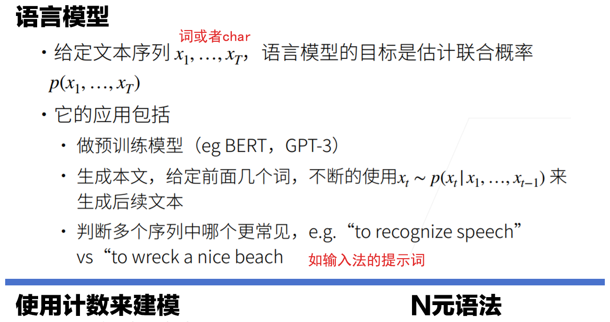
总结：
- 语言模型估计文本序列的联合概率
- 使用统计方法时常采用n元方法
2 代码实现
1 | import random |
最流行的词 被称为停用词 画出的词频图
1 | freqs = [freq for token, freq in vocab.token_freqs] |
见下图左
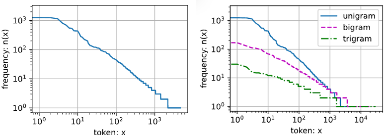
其他的词元组合，比如二元语法、三元语法等等，又会如何呢？
1 | bigram_tokens = [pair for pair in zip(corpus[:-1], corpus[1:])] |
1 | trigram_tokens = [ |
直观地对比三种模型中的标记频率
1 | bigram_freqs = [freq for token, freq in bigram_vocab.token_freqs] |
见上图右
随机地生成一个小批量数据的特征和标签以供读取。 在随机采样中，每个样本都是在原始的长序列上任意捕获的子序列
1 | def seq_data_iter_random(corpus, batch_size, num_steps): |
生成一个从 0 到 34 的序列
1 | my_seq = list(range(35)) |
保证两个相邻的小批量中的子序列在原始序列上也是相邻的
1 | def seq_data_iter_sequential(corpus, batch_size, num_steps): |
读取每个小批量的子序列的特征 X 和标签 Y
1 | for X, Y in seq_data_iter_sequential(my_seq, batch_size=2, num_steps=5): |
1 | class SeqDataLoader: |
最后，我们定义了一个函数 load_data_time_machine ，它同时返回数据迭代器和词汇表
1 | def load_data_time_machine(batch_size, num_steps, |
3 Q&A
且略
十七 编码器-解码器结构
1 编码器-解码器
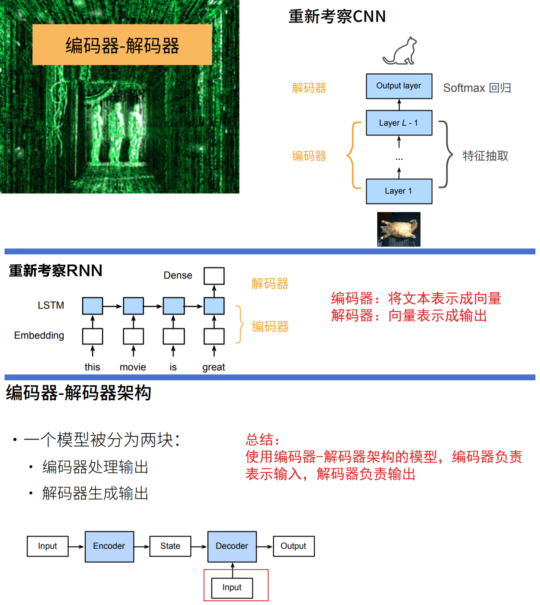
2 代码实现
1 | #编码器 |
合并编码器和解码器
1 | class EncoderDecoder(nn.Module): |
十八 序列到序列学习seq2seq
十九 束搜索
二十 注意力机制
1 Attention Mechanism
不随意：潜在特征和联系；随意：注意力、想法、查询query
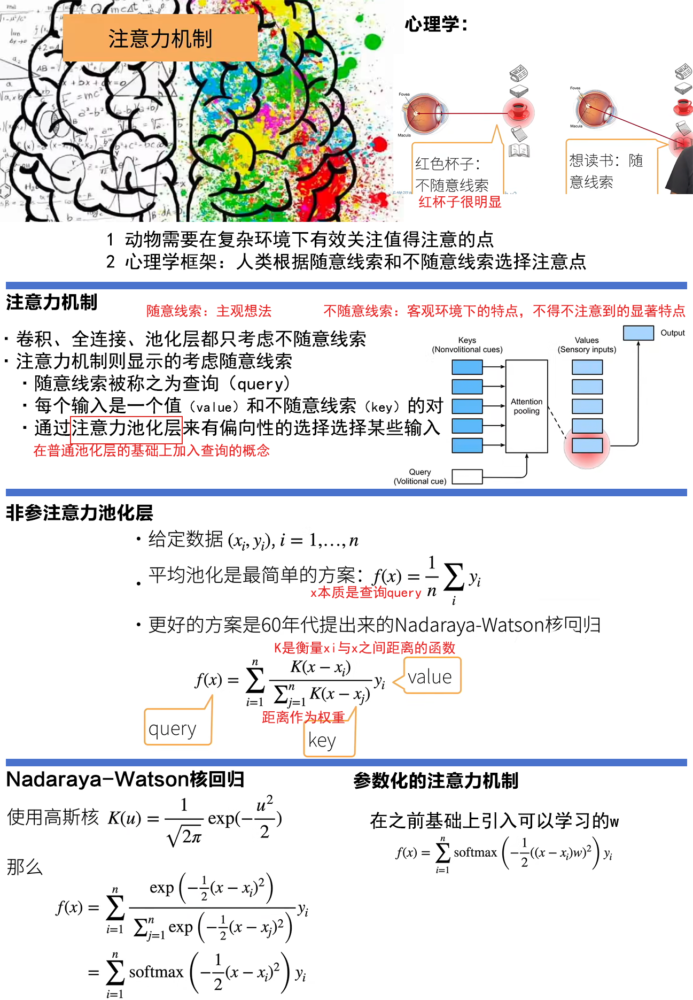
总结：
- 心理学认为人通过随意线索和不随意线索选择注意点
- 注意力机制中，通过query（随意线索）和key（不随意线索）来有偏向性的选择输入
- 可以一般的写作
f(x)=Σα(x,xi)yi，这里α(x,xi)是注意力权重 - 早在60年代就有非参数的注意力机制
- 接下来我们会介绍多个不同的权重设计
- 可以一般的写作
2 代码实现
注意力汇聚：Nadaraya-Watson 核回归
1 | import torch |
生成数据集
1 | n_train = 50 |
1 | def plot_kernel_reg(y_hat): |
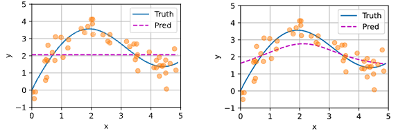
非参数注意力汇聚【pooling】
1 | X_repeat = x_test.repeat_interleave(n_train).reshape((-1, n_train)) |
如图右，较集中的样本权重更大
注意力权重
1 | d2l.show_heatmaps( |
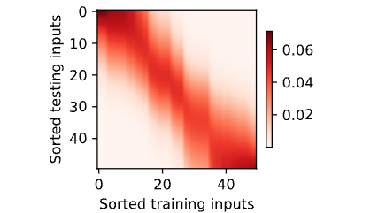
带参数注意力汇聚 假定两个张量的形状分别是(n,a,b) 和 (n,b,c) ，它们的批量矩阵乘法输出的形状为 (n,a,c)
1 | X = torch.ones((2, 1, 4)) |
使用小批量矩阵乘法来计算小批量数据中的加权平均值
1 | weights = torch.ones((2, 10)) * 0.1 |
带参数的注意力汇聚
1 | class NWKernelRegression(nn.Module): |
将训练数据集转换为键和值
1 | X_tile = x_train.repeat((n_train, 1)) |
训练带参数的注意力汇聚模型
1 | net = NWKernelRegression() |
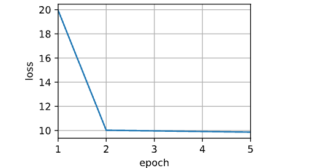
预测结果绘制
1 | keys = x_train.repeat((n_test, 1)) |
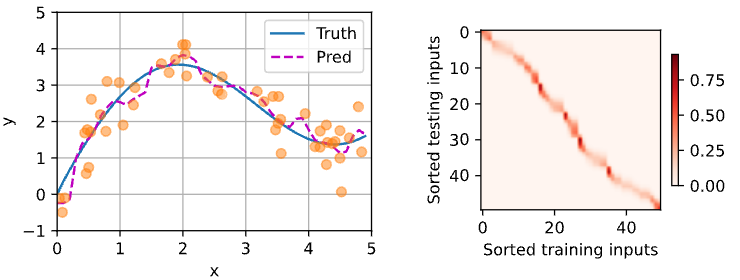
曲线在注意力权重较大的区域变得更不平滑
1 | d2l.show_heatmaps( |
二十一 注意力分数
1 注意力分数
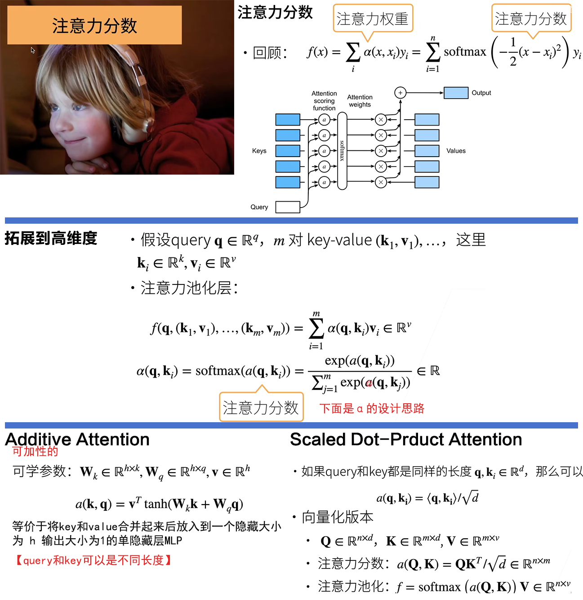
总结：
- 注意力分数是query和key的相似度，注意力权重分数是softmax结果【表示给每一个key-value pair多少个多注意力】
- 两种常见的分数计算：
- 将query和key合并起来进入一个单输出单隐藏层的MLP
- 直接将query和key做内积
2 代码实现
注意力打分函数，遮蔽softmax操作
1 | import math |
演示此函数是如何工作
1 | masked_softmax(torch.rand(2, 2, 4), torch.tensor([2, 3])) |
加性注意力
1 | class AdditiveAttention(nn.Module): |
演示上面的AdditiveAttention类
1 | queries, keys = torch.normal(0, 1, (2, 1, 20)), torch.ones((2, 10, 2)) |
注意力权重【如图左】
1 | d2l.show_heatmaps(attention.attention_weights.reshape((1, 1, 2, 10)), |
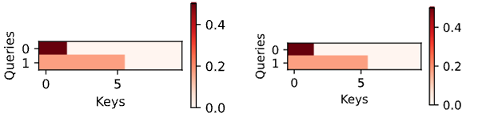
缩放点积注意力
1 | class DotProductAttention(nn.Module): |
演示上述的DotProductAttention类
1 | queries = torch.normal(0, 1, (2, 1, 2)) |
均匀的注意力权重【如图右】
1 | d2l.show_heatmaps(attention.attention_weights.reshape((1, 1, 2, 10)), |
3 Q&A
3.1 Little Questions
- query、key、value的区别？在不同网络中，这三者被赋予了不同的含义。
- query和key的相似度作为注意力分数，要查询一个query的值，应该看谁的value比较相近，其重要性相应更高，注意力权重也更高
二十二 使用注意力机制的seq2seq
1 seq2seq
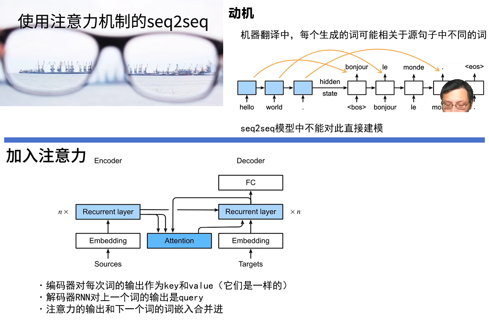
总结：
- Seq2seq中通过隐状态在编码器和解码器中传递信息
- 注意力机制可以根据解码器RNN的输出来匹配到合适的编码器RNN的输出来更有效的传递信息
2 代码实现
Bahdanau 注意力
1 | import torch |
带有注意力机制的解码器基本接口
1 | class AttentionDecoder(d2l.Decoder): |
实现带有Bahdanau注意力的循环神经网络解码器
1 | class Seq2SeqAttentionDecoder(AttentionDecoder): |
测试Bahdanau 注意力解码器
1 | encoder = d2l.Seq2SeqEncoder(vocab_size=10, embed_size=8, num_hiddens=16, |
训练
1 | embed_size, num_hiddens, num_layers, dropout = 32, 32, 2, 0.1 |
见图左
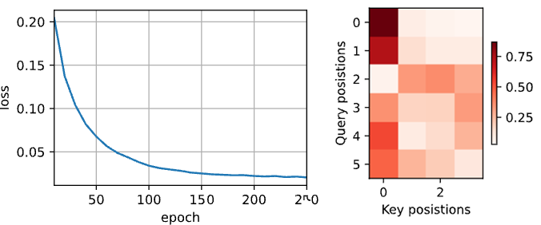
将几个英语句子翻译成法语
1 | engs = ['go .', "i lost .", 'he\'s calm .', 'i\'m home .'] |
1 | attention_weights = torch.cat( |
可视化注意力权重
1 | d2l.show_heatmaps( |
见图右
二十三 自注意力和位置编码
1 SA
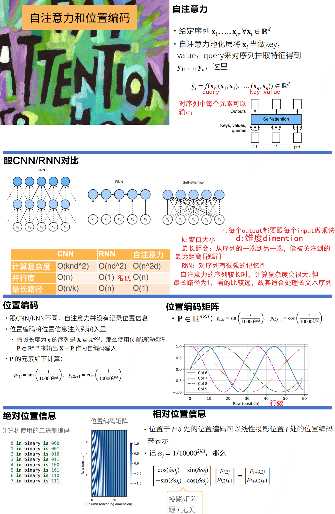
总结：
- 自注意力池化层将xi当做key、value、query来对序列抽取特征
- 完全并行、最长序列为1【能看到整个序列的信息】、但对长序列计算复杂度高
- 位置编码在输入中加入位置信息，使得自注意力能够记忆位置信息
2 代码实现
1 | import math |
自注意力
1 | num_hiddens, num_heads = 100, 5 |
1 | batch_size, num_queries, valid_lens = 2, 4, torch.tensor([3, 2]) |
位置编码
1 | class PositionalEncoding(nn.Module): |
行代表标记在序列中的位置，列代表位置编码的不同维度
1 | encoding_dim, num_steps = 32, 60 |
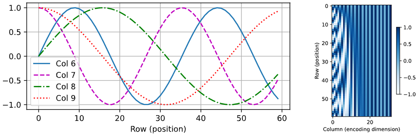
二进制表示
1 | for i in range(8): |
在编码维度上降低频率
1 | P = P[0, :, :].unsqueeze(0).unsqueeze(0) |
二十四 Transformer
1 Transformer
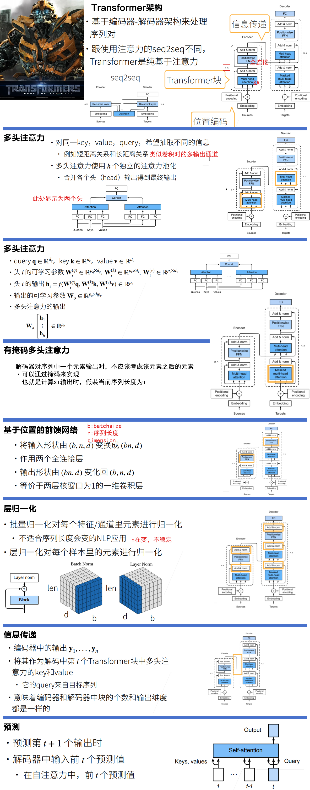
总结：
- Transformer是一个纯使用注意力的编码-解码器
- 编码器和解码器都有n个transformer块
- 每个块里使用多头（自）注意力，基于位置的前馈网络，和层归一化
2 代码实现
1 | import math |
基于位置的前馈网络
1 | class PositionWiseFFN(nn.Module): |
改变张量的最里层维度的尺寸
1 | ffn = PositionWiseFFN(4, 4, 8) |
对比不同维度的层归一化和批量归一化的效果
1 | ln = nn.LayerNorm(2) |
使用残差连接和层归一化
1 | class AddNorm(nn.Module): |
加法操作后输出张量的形状相同
1 | add_norm = AddNorm([3, 4], 0.5) |
实现编码器中的一个层
1 | class EncoderBlock(nn.Module): |
Transformer编码器中的任何层都不会改变其输入的形状
1 | X = torch.ones((2, 100, 24)) |
Transformer编码器
1 | class TransformerEncoder(d2l.Encoder): |
创建一个两层的Transformer编码器
1 | encoder = TransformerEncoder(200, 24, 24, 24, 24, [100, 24], 24, 48, 8, 2, |
Transformer解码器也是由多个相同的层组成
1 | class DecoderBlock(nn.Module): |
编码器和解码器的特征维度都是num_hiddens
1 | decoder_blk = DecoderBlock(24, 24, 24, 24, [100, 24], 24, 48, 8, 0.5, 0) |
Transformer解码器
1 | class TransformerDecoder(d2l.AttentionDecoder): |
训练
1 | num_hiddens, num_layers, dropout, batch_size, num_steps = 32, 2, 0.1, 64, 10 |
如下如左
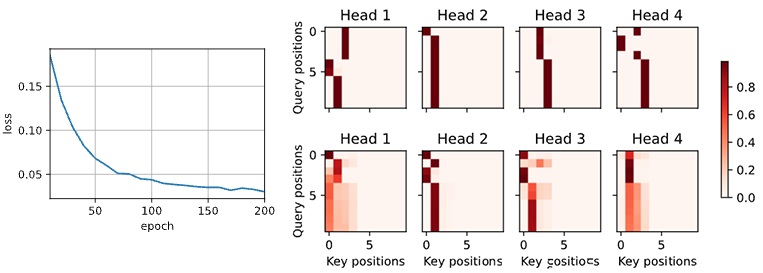
将一些英语句子翻译成法语
1 | engs = ['go .', "i lost .", 'he\'s calm .', 'i\'m home .'] |
可视化Transformer 的注意力权重
1 | enc_attention_weights = torch.cat(net.encoder.attention_weights, 0).reshape( |
1 | d2l.show_heatmaps(enc_attention_weights.cpu(), xlabel='Key positions', |
如上图 右
为了可视化解码器的自注意力权重和“编码器－解码器”的注意力权重，我们需要完成更多的数据操作工作
1 | dec_attention_weights_2d = [ |
1 | d2l.show_heatmaps( |
如下图左
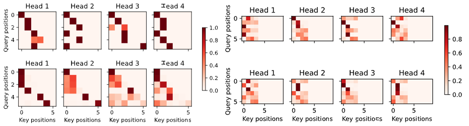
输出序列的查询不会与输入序列中填充位置的标记进行注意力计算
1 | d2l.show_heatmaps(dec_inter_attention_weights, xlabel='Key positions', |
如上图右